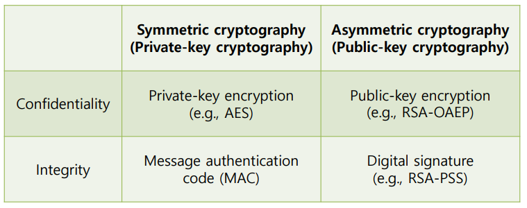
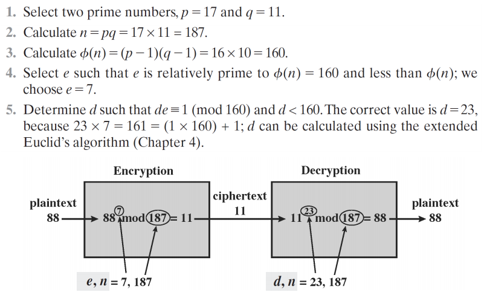
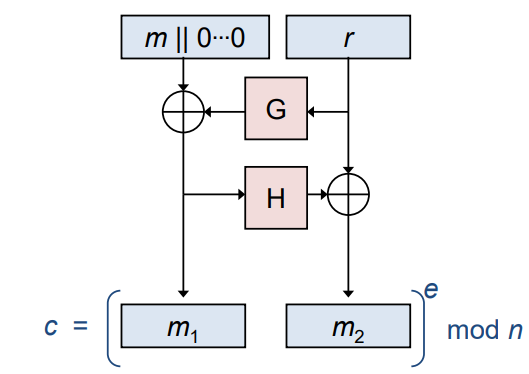

Chapter 7. 공개 키 암호와 RSA(Public Key Cryptography and RSA)¶
1절. 공개 키 암호
2절. Public-Key Encryption
3절. RSA Encryption
4절. Hybrid Encryption
5절. Exponentiation
1절. 공개 키 암호¶
공개 키 암호(Public Key Cryptography) == 비대칭형 암호(Asymmetric Cryptography)¶
(Alice : 암호 소유자 / Bob : 암호 해독자)
- 두 개의 별도 키가 필요한 암호화 시스템
- 비밀키, 공개키
- 두 키는 다르지만 수학적인 연결
- 한 당사자(Alice)는 공개키와 그에 맞는 개인키(비밀키)를 생성
- 공개키는 널리 배포
- Alice와 통신하고자 하는 모든 사람(Bob)이 공개키를 알고 있음
- Alice의 공개키는 공격자도 알 알고 있음
- Alice의 비공개키는 비밀로 유지
- Bob은 자신의 공개키를 보유 / 미보유 가능
비밀 vs 공개 키 암호¶
비밀키/대칭 암호화의 단점¶
-
키의 안전한 공유의 필요
-
통신할 당사자들은 서로 미리 알아야 함
-
대규모 조직은 키의 배포와 관리가 어려움
-
\(t\)명의 네트워크에서는 통신을 위해 \(O(t^2)\)개의 키 필요
-
모든 키는 안전 저장 필수
-
비밀키 암호화는 개방형 시스템에서는 적용 불가
-
ex) 전자상거래
비밀키 암호화의 필요성¶
- 비밀키 암호화
- 효율성 면에서 훨씬 더 우수하며 적용 가능 영역 존재
- 군사 환경, 디스크 암호화 등
- 공개키 기법과 결합하여 암호화에서 두 가지의 장점 보유
- 키는 신뢰할 수 있는 기관을 통해 배포
- ex) KDC(Key Distribution Center : 키 배포 센터)
Cryptographic Primitives(암호학적 기본 요소)¶

2절. Public-Key Encryption¶
공개 키 암호(Public-Key Encryption)¶
-
키 생성 알고리즘
-
(pk, sk)를 출력하는 랜덤화된 알고리즘
-
암호화 알고리즘
-
공개 키와 메시지(평문)를 입력받아 암호문을 출력
-
c = E(pk, m)
-
복호화 알고리즘
-
비밀 키와 암호문을 입력받아 메시지를 출력
- m = D(sk, c)
3절. RSA Encryption¶
배경¶
-
오일러의 정리(Euler's Theorem)
-
\(m\)과 \(n\)이 서로소일 때 \((m ∈ Z_n^*)\), \(m^φ(n) ≡\) \(1\) (\(mod\) \(n\))
-
\(ed\) \(≡\) \(1\) (\(mod\) \(φ(n)\))일 때, 모든 \(m\)에 대해 \((m^e)^d\) \(≡\) \(m^{ed}\) \(≡\) \(m\) (\(mod\) \(n\))
-
\(n\) \(=\) \(pq\)이며 \(p\)와 \(q\)는 서로 다른 홀수 소수
-
\(φ(n) = (p-1)(q-1) = |Z_n^*|\)
- \(n\)의 소인수분해가 주어지면 \(φ(n)\) 계산 가능
-
\(n\)의 소인수분해가 없으면 \(φ(n)\) 계산 불가
-
비대칭성(asymmetry)
- \(e\)와 \(n\)의 소인수분해를 통해 계산된 \(d\)가 주어진 경우, \(c = m^e\) \(mod\) \(n\)으로부터 \(m\) 계산 가능
- \(n\)의 소인수분해가 없는 경우, \(c = m^e\) \(mod\) \(n\)으로부터 \(m\)을 계산할 명확한 방법 X
키 생성(RSA Key Generation)¶
- 충분한 길이를 가진 랜덤 홀수 소수 \(p\)와 \(q\) 생성
- \(n = pq\)와 \(φ(n) = (p - 1)(q - 1)\) 계산
- \(ed ≡ 1\) (\(mod\) \(φ(n))\)을 만족하는 \(e\)와 \(d\) 계산
- \(e\)는 \(φ(n)\)과 서로소이며 \(gcd(e, φ(n)) = 1\)
- \(d\)는 확장된 유클리드 알고리즘으로 계산 가능
- 공개 키 = \((e, n)\)
- 비밀 키 = \((d, n)\)
교과서에서의 RSA¶
- 공개 키 = \((e, n)\)
- 비밀 키 = \((d, n)\)
-
메시지 \(m ∈ Z_n^*\)를 암호화를 위한 계산
-
\(c\) \(=\) \(m^e\) \(mod\) \(n\)
-
암호문 c를 복호화를 위한 계산
-
\(m\) \(=\) \(c^d\) \(mod\) \(n\)
-
보안성
- 결정적(deterministic)이며 암호문이 평문에 대한 특정 정보 누설
예시¶

RSA-OAEP(Optimal Asymmetric Encryption Padding)¶

- 이론 : \(G\)와 \(H\)는 랜덤 오라클
- 실제 : \(G\)와 \(H\)는 암호학의 해쉬 함수들
4절. Hybrid Encryption¶
하이브리드 암호(Hybrid Encryption)¶
- 공개 키 암호의 느린 속도임에도 사용하여 랜덤 대칭 키를 암호화
- 해당 대칭 키로 메시지를 암호화
- 수신자는 공개 키 암호화 방식을 사용하여 대칭 키를 복호화
- 복원된 대칭 키로 메시지를 복호화
- 대칭 키 암호화의 (점근적) 효율성을 가지면서도 공개 키 암호화의 기능 제공
5절. Exponentiation¶
거듭제곱(Exponentiation)¶
- RSA에서는 잠재적으로 큰 지수 사용
-
거듭 제곱의 효율성 증가 방법
-
\(x^{16}\) 계산
- 15번의 곱셈 필요
-
\(x^{16}= x × x × x × x × x × x × x × x × x × x × x × x × x × x × x × x\)
-
각 부분 제곱의 반복적 계산
- \((x^2, x^4, x^8, x^{16})\)을
- 4번의 곱셈으로 동일한 최종 결과
-
\(x^{11}\) \(mod\) \(n\) 계산
- \(x^{11}=x^{1+2+8}=(x)(x^2)(x^8)\)
- \([(x\) \(mod\) \(n)×(x^2\) \(mod\) \(n)×(x^8\) \(mod\) \(n)]\)